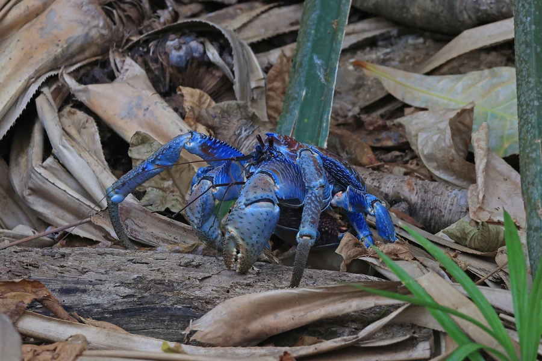

甲壳动物 · 动物界
椰子蟹 Birgus latro

世界上最大的陆生节肢动物，成体不再需要螺壳，能爬树取食椰肉，分布于印度—太平洋岛屿，受过度捕捉威胁。
- 分类
- 门节肢动物门纲软甲纲目十足目科陆寄居蟹科属椰子蟹属
- 栖息环境
- 热带岛屿的海岸林、沙滩和椰林，昼伏夜出
- 地理分布
- 印度—太平洋热带岛屿，包括塞舌尔、斐济、关岛等地
- 保护级别
- IUCN 易危（VU）；多国限制捕捉
物种志
椰子蟹是现存最大的陆生节肢动物，体重可达 4 kg，腿展超过 1 m。成体腹部硬化，不再需要寄居螺壳；幼体仍像寄居蟹一样背着螺壳生活。体色从橙红、紫蓝到褐色变化，螯足极强壮，能夹开椰子。
它生活在印度—太平洋的热带岛屿，栖息在海岸林和沙滩附近，昼伏夜出，爬树能力强，能爬到椰子树和棕榈树上取食果实，也吃腐肉、果实和落叶。椰子蟹靠嗅觉寻找食物，幼体在海中孵化后上岸。由于肉质鲜美，椰子蟹长期被大量捕捉，加上栖息地被开发，许多岛屿的种群明显下降，被 IUCN 评估为易危，各分布国正在加强捕捞限制和保护。椰子蟹的寿命可达数十年。
形态与习性
- 食性取食椰肉、果实、落叶和动物尸体
- 体型体重可达 4 kg，腿展超过 1 m
- 特点成体腹部硬化，不再需要螺壳
- 习性昼伏夜出，善于爬树，靠嗅觉找食
- 分布印度—太平洋热带岛屿
- 保护IUCN 易危，多国限制捕捉和贸易
趣味知识
- 椰子蟹是现存最大的陆生节肢动物，腿展开可超过 1 米。
- 成年的椰子蟹不再背螺壳，腹部已经硬化。
- 它的螯足力量惊人，可以夹开坚硬的椰子。